Chapter 5 Factor Variables, T-tests, and Regression
Week 6 tutorial goals:
- Factors –
factor() - Difference in means –
t.test() - Linear regression –
lm() - Visualizing regression models using
ggplot
5.1 Before the start of class
Download files from Quercus
Move all the files into your R project .Rproj folder
Open your R project
5.2 Recap
Determining plot based on type of variable
- Single categorical (nominal/ordinal) variable – Bar chart
geom_bar() - Single numerical (interval/ratio) variable – Histogram
geom_histogram() - Categorical (nominal/ordinal) and categorical – Stacked bar chart
geom_bar() - Categorical (nominal/ordinal) and numerical (interval/ratio) – Box and whiskers
geom_boxplot() - Numerical (interval/ratio) and numerical – Scatter plot
geom_point()
Bar chart for a nominal variable
- born_canada
## [1] "Born elsewhere" "Born in Canada" NA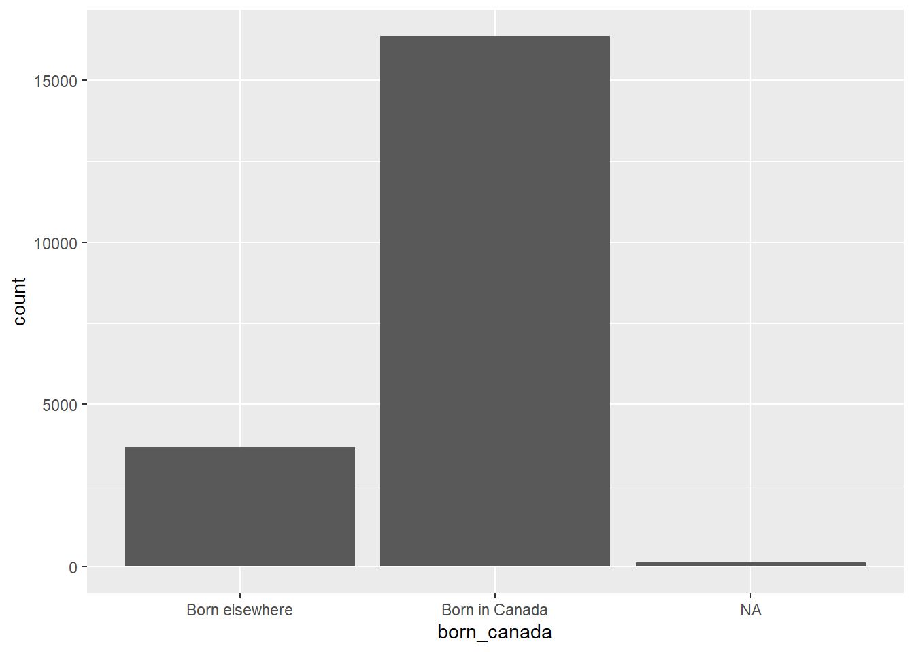
The third bar is NA: 132 people did not answer the question.
- How could we not show the NAs?
Use filter() to keep only the people who answered, then pipe the result into ggplot(). is.na() is TRUE when a value is missing, so is.na(ces$born_canada) == FALSE keeps the rows that are not missing.
- Adding
na.rm=TRUEtogeom_bar()does not remove theNAbar. The NAs have to be removed from the data first.
ces |>
filter(is.na(ces$born_canada) == FALSE) |> # keep people who are not NA for born_canada
ggplot(aes(x=born_canada)) +
geom_bar()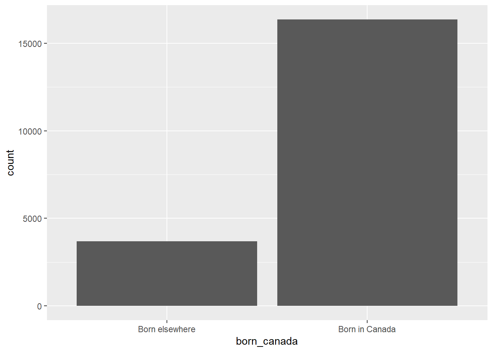
This is the same is.na() we used with table() last week to count missing values:
##
## FALSE TRUE
## 20048 132Now lets try another variable, Union:
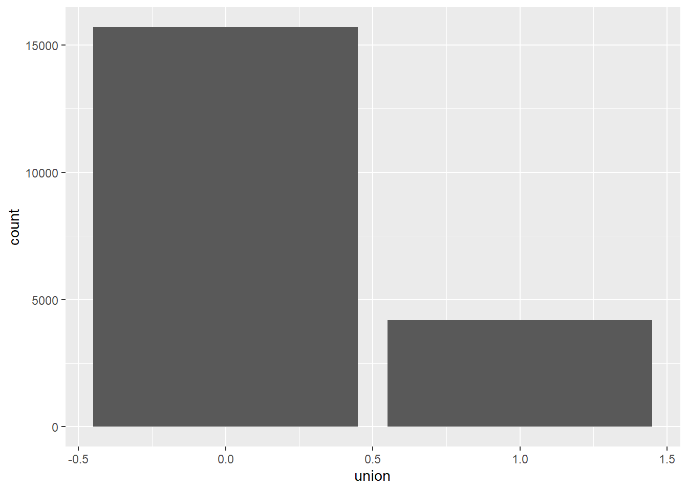
Wait! Something is wrong!
5.3 Factors
A factor is R’s data type for categories. Similar to character, but has levels with an order. Order can be arbitrary (province), or meaningful (agree/disagree).
R assumes all letters/words are character and all numbers are numeric
Use
factor()to turn a variable into a factor.Why? When numbers or characters are really categories.
Numbers that are really categories
The variable union asks “Do you belong to a union?”. It is coded 1 = yes and 0 = no. The numbers are just labels for two categories, so union is a nominal variable, or maybe ordinal. But R stores it as a number.
## [1] "integer"Because union is a number, ggplot() treats it as continuous. This boxplot is wrong: it draws one box instead of one box for each group.
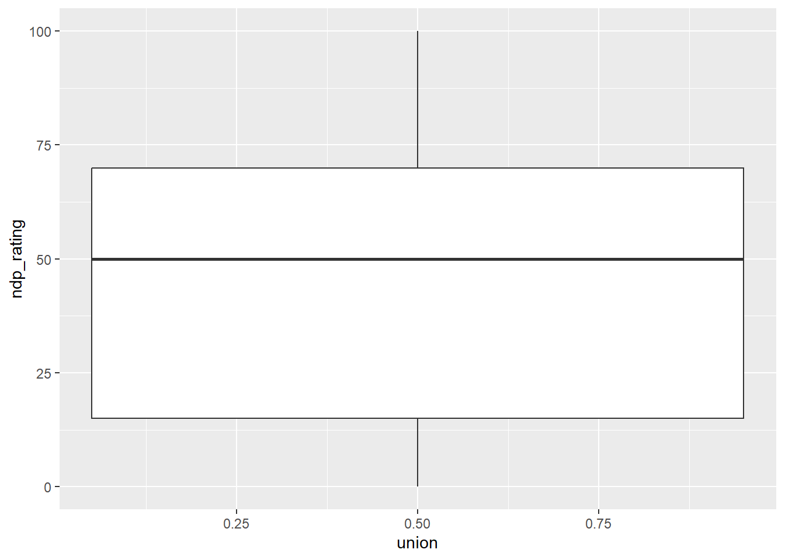
Notice the x axis: 0.25, 0.50, 0.75. R thinks union could be any number between 0 and 1. The warning message about a “continuous x aesthetic” is also a sign that something is wrong.
Wrapping the variable in factor() tells R that it is a category, but only temporarily.
## [1] "factor"We use mutate() to save the factor as a new column, union_factor. The original union column stays the same. Now we can use union_factor in every plot without wrapping it in factor() each time.
## [1] "factor"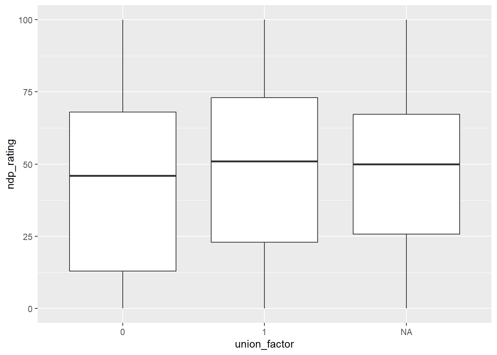
Now there is one box for non-members (0), one for union members (1), and one for people who did not answer (NA).
Setting the order of categories
Look at another variable: born_canada
Text categories are sorted alphabetically, so “Born elsewhere” comes before “Born in Canada”.
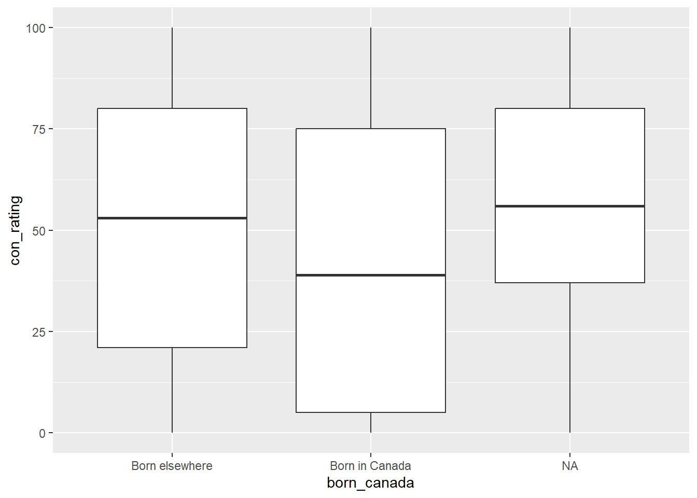
The levels argument of factor() sets the order ourselves. Write the categories exactly as they appear in the data. Like with union, we use mutate() to save it as a new column, born_canada_order.
ces <- ces |>
mutate(born_canada_order = factor(born_canada, levels=c("Born in Canada","Born elsewhere")))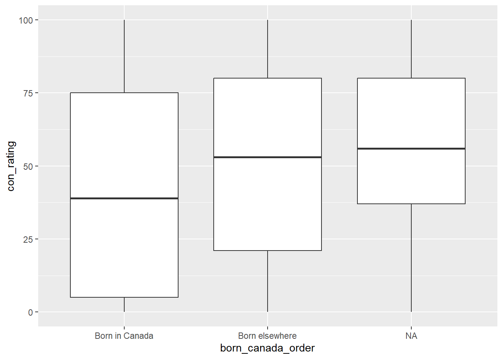
This only changes the order of the categories. The original born_canada column stays the same.
Now write some code to change the union categories to words instead of 0 and 1, then make a boxplot
5.4 Canadian Election Study data
We use the same 2025 Canadian Election Study (CES) data as last week.
Stephenson, Laura B., Allison Harell, and Daniel Rubenson. 2025 Canadian Election Study (CES). [dataset]
These are the variables we use today:
| variable | desc. |
|---|---|
| born_canada | Where the respondent was born: “Born in Canada” or “Born elsewhere” |
| union | Do you belong to a union? (1 = yes, 0 = no) |
| con_rating | How do you feel about the Conservative Party? (0 = really dislike, 100 = really like) |
| ndp_rating | How do you feel about the NDP? (0 = really dislike, 100 = really like) |
Today we compare two groups: people born in Canada and people born elsewhere. Do they feel differently about the parties?
This is a comparison, not an experiment. In an experiment, the researcher randomly decides who gets the treatment, so the groups are alike in every other way. Nobody randomly decided where our respondents were born. People born in Canada and people born elsewhere also differ in other ways (for example age, province or religion). So a difference between the groups does not show that where you were born causes the difference.
Display first five rows of the dataset.
## age gender province born_canada union vote lib_rating
## 1 69 Woman British Columbia Born elsewhere 0 Conservative 5
## 2 61 Woman Alberta Born in Canada 0 NDP 66
## 3 54 Woman Quebec Born in Canada 0 Conservative 0
## 4 28 Woman Ontario Born elsewhere 0 Liberal 98
## 5 63 Woman Ontario Born in Canada 0 Liberal 83
## con_rating ndp_rating carney_rating poilievre_rating singh_rating lr_self
## 1 80 8 22 77 3 8
## 2 0 87 87 0 100 3
## 3 89 41 11 90 NA 7
## 4 4 4 99 5 NA 7
## 5 12 38 76 0 65 NA
## carbon_tax econ_retro reduce_gap provfed
## 1 Strongly disagree Worse Somewhat more Strong federal government
## 2 Strongly agree Same Somewhat more Strong federal government
## 3 Somewhat disagree Worse <NA> <NA>
## 4 Somewhat agree Same <NA> Strong federal government
## 5 <NA> Same <NA> <NA>
## union_factor born_canada_order
## 1 0 Born elsewhere
## 2 0 Born in Canada
## 3 0 Born in Canada
## 4 0 Born elsewhere
## 5 0 Born in Canada5.5 Difference in means – t.test()
Syntax
The dependent variable and independent variable are separated by a ~.
- this is a common format, same for regression
The dependent variable should be an interval variable (like a 0-100 rating)
The group variable must have exactly two groups. `
- t.test()
leaves outNA`s automatically.
Outcome 1: Conservative Party rating
##
## Welch Two Sample t-test
##
## data: con_rating by born_canada
## t = 14.667, df = 5493.8, p-value < 2.2e-16
## alternative hypothesis: true difference in means between group Born elsewhere and group Born in Canada is not equal to 0
## 95 percent confidence interval:
## 7.874084 10.303821
## sample estimates:
## mean in group Born elsewhere mean in group Born in Canada
## 51.10868 42.01972This output shows the mean of each group and a confidence interval, but it does not show the difference itself. The p-value is also hard to read (< 2.2e-16 is a very small number).
Making the output easier to read – model_parameters()
The function model_parameters() from the package parameters turns the t-test output into a clear table. We pipe the t-test into it.
- the table is actually a tiny one row dataframe, with each number as a column
## Welch Two Sample t-test
##
## Parameter | Group | born_canada = Born elsewhere
## -------------------------------------------------------
## con_rating | born_canada | 51.11
##
## Parameter | born_canada = Born in Canada | Difference | 95% CI
## ----------------------------------------------------------------------
## con_rating | 42.02 | 9.09 | [7.87, 10.30]
##
## Parameter | t(5493.83) | p
## --------------------------------
## con_rating | 14.67 | < .001
##
## Alternative hypothesis: true difference in means between group Born elsewhere and group Born in Canada is not equal to 0The table shows the mean of each group, the Difference, its 95% confidence interval (95% CI) and the p-value (p).
Be careful of the direction of the difference. t.test() takes the mean of the first group minus the mean of the second group. The groups are in numerical order, or alphabetical order if they are text. So here it is “Born elsewhere” minus “Born in Canada”: 51.11 - 42.02 = 9.09.
Interpreting the difference
Respondents born elsewhere rate the Conservative Party 9 points higher (on a 0-100 scale) than respondents born in Canada.
The difference is statistically significant (p < .001), so the correlation very likely isn’t due to chance.
This is not an experiment, so we can’t say that being born outside Canada causes people to like the Conservatives more.
- An alternative explaination would be…
Outcome 2: NDP rating
## Welch Two Sample t-test
##
## Parameter | Group | born_canada = Born elsewhere
## -------------------------------------------------------
## ndp_rating | born_canada | 43.35
##
## Parameter | born_canada = Born in Canada | Difference | 95% CI
## ----------------------------------------------------------------------
## ndp_rating | 43.81 | -0.46 | [-1.54, 0.62]
##
## Parameter | t(5303.46) | p
## -------------------------------
## ndp_rating | -0.84 | 0.401
##
## Alternative hypothesis: true difference in means between group Born elsewhere and group Born in Canada is not equal to 0Respondents born elsewhere rate the NDP 0.46 points lower than respondents born in Canada. The difference is not statistically significant (p = 0.401), and the confidence interval includes 0.
5.6 Visualizing differences in means
Estimates and confidence intervals – geom_pointrange()
The output of model_parameters() is a data frame, so we can pipe it straight into ggplot().
Because the estimate is one-dimensional (you only need either x or y), the other dimension can be used as a name label instead of a variable. In this code, y=Difference is the estimate. x=“Conservative rating” is just an axis label, so it is in quotes.
t.test(con_rating ~ born_canada, data = ces) |>
model_parameters() |>
ggplot(aes(y=Difference,x="Conservative rating")) +
geom_pointrange(aes(ymax=CI_high,ymin=CI_low))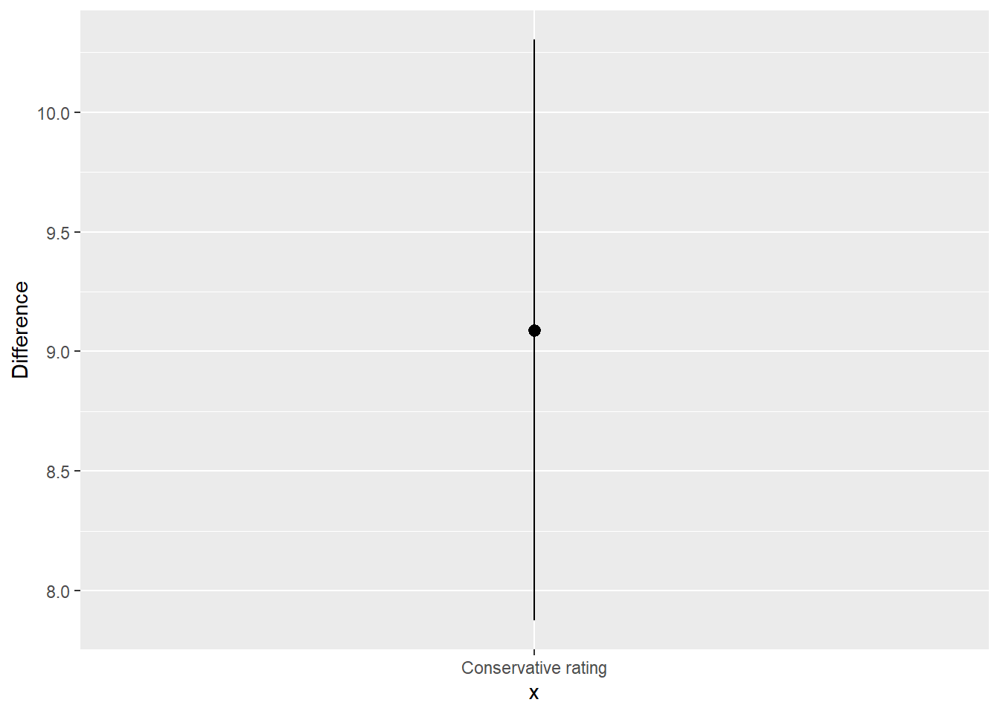
geom_pointrange() syntax (do not run the following code)
ggplot(<name of dataframe>,
aes(y = Difference, # from the model_parameters() output
x = "name of x-axis label")) + # x will be the x-axis label
geom_pointrange(aes(ymax=CI_high,ymin=CI_low)) # from the model_parameters() outputTo highlight whether the difference is statistically significant, we usually add the 0-intercept line
t.test(con_rating ~ born_canada, data = ces) |>
model_parameters() |>
ggplot(aes(y=Difference,x="Conservative rating")) +
geom_pointrange(aes(ymax=CI_high,ymin=CI_low)) +
geom_hline(aes(yintercept=0),linetype="dashed") # this adds a horizontal line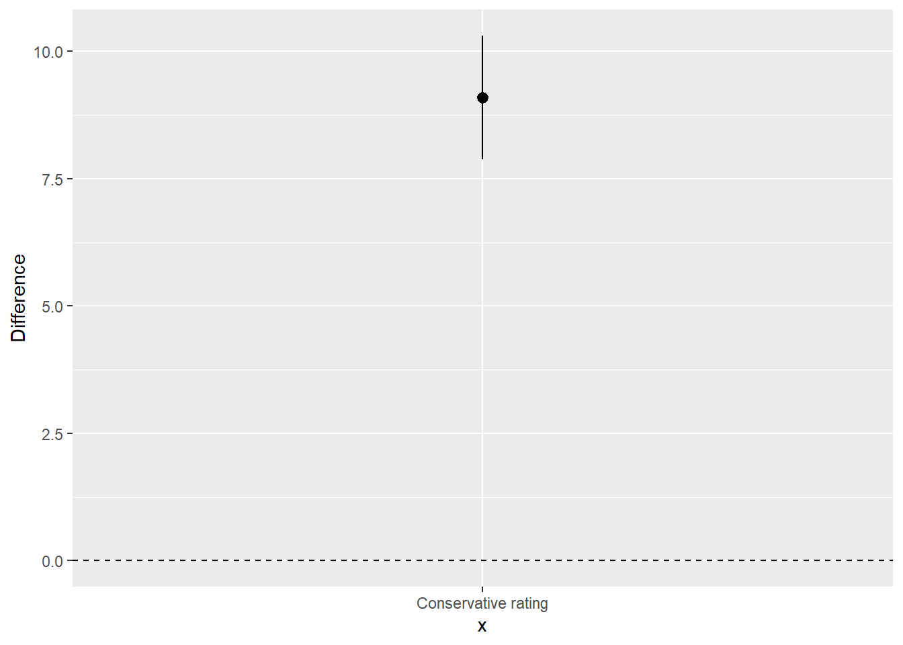
To beautify the graph, we might change its theme and change x and y labels (xlab and ylab).
Put the direction of the difference in the label, so readers know which group is higher.
t.test(con_rating ~ born_canada, data = ces) |>
model_parameters() |>
ggplot(aes(y=Difference,x="Conservative rating")) +
geom_pointrange(aes(ymax=CI_high,ymin=CI_low)) +
geom_hline(aes(yintercept=0),linetype="dashed") +
theme_bw() + # black and white theme
xlab("") + # hides the x label
ylab("Difference in means (Born elsewhere - Born in Canada)") # replaces the y label
The same plot for the NDP rating. Here the confidence interval crosses the dashed 0 line, so the difference is not statistically significant.
t.test(ndp_rating ~ born_canada, data = ces) |>
model_parameters() |>
ggplot(aes(y=Difference,x="NDP rating")) +
geom_pointrange(aes(ymax=CI_high,ymin=CI_low)) +
geom_hline(aes(yintercept=0),linetype="dashed") +
theme_bw() +
xlab("") +
ylab("Difference in means (Born elsewhere - Born in Canada)")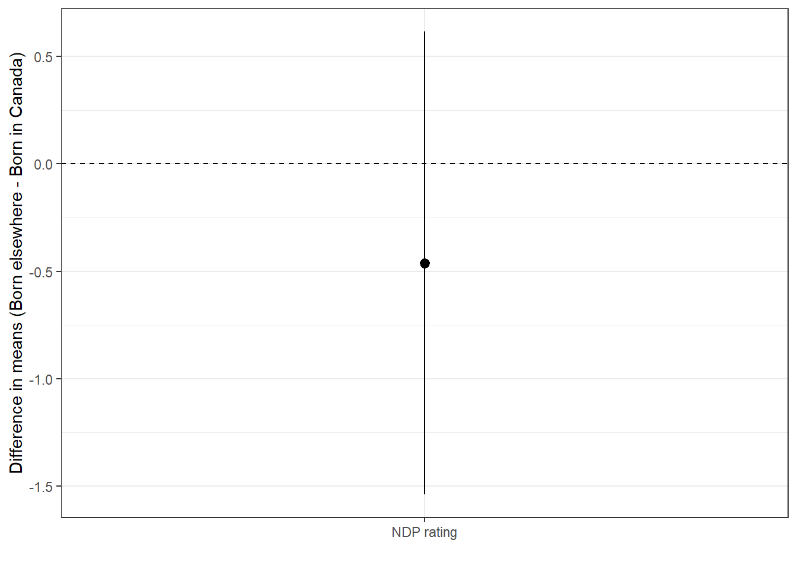
You could also flip the x and y.
t.test(ndp_rating ~ born_canada, data = ces) |>
model_parameters() |>
ggplot(aes(x=Difference,y="NDP rating")) +
geom_pointrange(aes(xmax=CI_high,xmin=CI_low)) +
geom_vline(aes(xintercept=0),linetype="dashed") +
theme_bw() +
ylab("") +
xlab("Difference in means (Born elsewhere - Born in Canada)")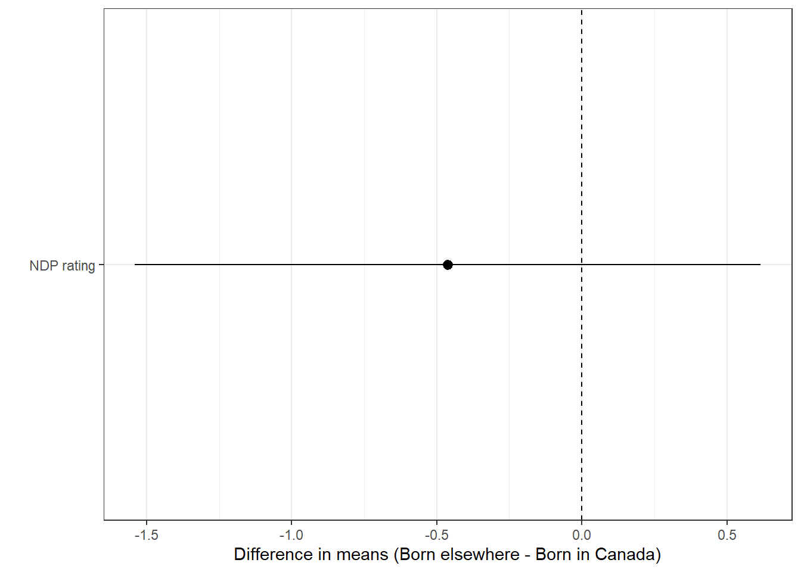
5.7 Linear regression
Load a different dataset (some variables from Varieties of Democracies data set)
Each row is a country in 2023 (179 countries).
Variables from Varieties of Democracy dataset
- Power distributed by gender (C) (v2pepwrgen): Q. Is political power distributed according to gender? (0: Men have a near-monopoly on political power, 4: Men and women have roughly equal political power.)
- Female journalists (C) (v2mefemjrn): Q. Please estimate the percentage (%) of journalists in the print and broadcast media who are women. (Interval)
From ordinal to interval
The (C) means the variable is coded by country experts. Each expert answers the question on the 0 to 4 scale above. That answer is ordinal: the categories have an order, but the gaps between them are not equal.
V-Dem then combines the answers of all the experts for a country into one score. This score is not limited to 0, 1, 2, 3 or 4. It can be any number, including decimals and negative numbers. Higher numbers still mean more equal power between men and women. Because it is a continuous number, we can treat it as an interval variable.
## Min. 1st Qu. Median Mean 3rd Qu. Max.
## -2.8170 0.3645 1.0180 0.9792 1.6885 3.7120Notice the minimum is below 0 and the maximum is above 3. These are not the 0 to 4 answers from the codebook.
Bivariate relationship using a scatter plot geom_point()
Do countries with more women journalists also have more equal political power between men and women?
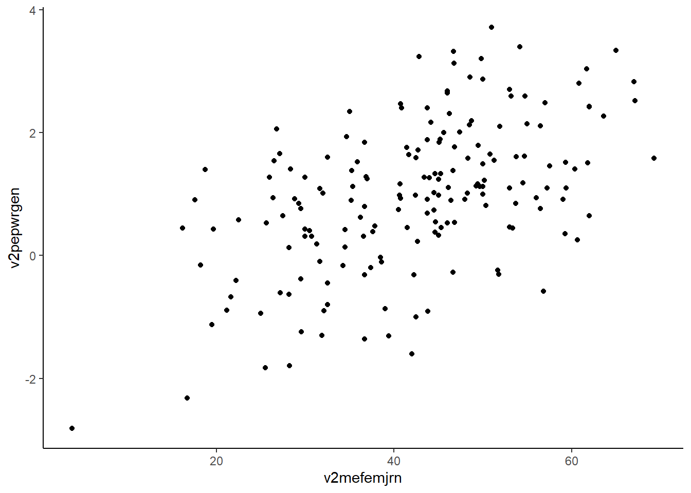
What does a regression do?
A linear regression finds the straight line that best fits the points.
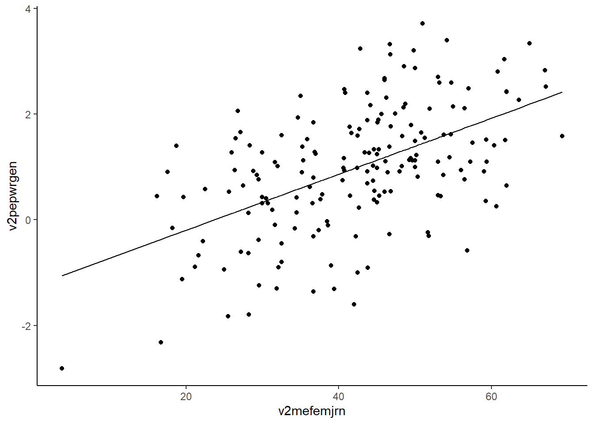
The gap between a country’s real value and its predicted value is the error (the grey lines). Some countries are above the line and some are below.
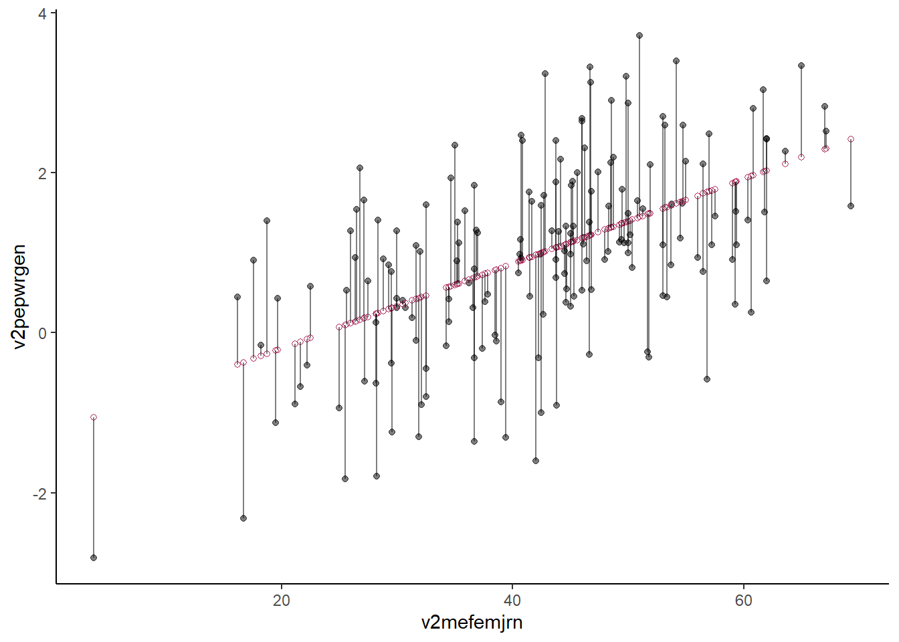
The regression line is the line that makes these errors as small as possible overall.
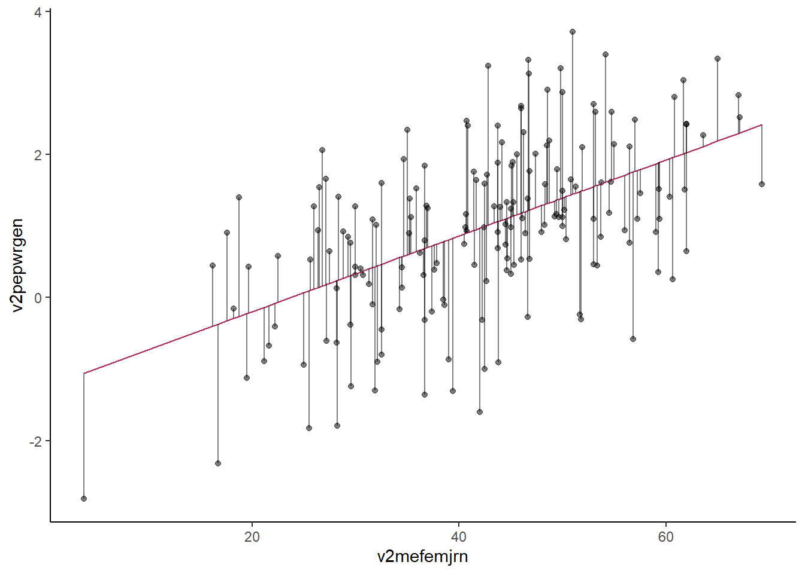
Running a regression – lm()
lm() stands for “linear model”. It uses the same ~ format as t.test(): the dependent variable goes on the left and the independent variable on the right. Like t.test(), it leaves out NAs automatically.
lm() syntax (do not run the following code)
We save the regression as an object and use model_parameters() to make the output easy to read, just like with the t-test.
journalists_model <- lm(v2pepwrgen ~ v2mefemjrn, data = vdem)
journalists_model |>
model_parameters()## Parameter | Coefficient | SE | 95% CI | t(177) | p
## -----------------------------------------------------------------------
## (Intercept) | -1.26 | 0.28 | [-1.81, -0.71] | -4.52 | < .001
## v2mefemjrn | 0.05 | 6.36e-03 | [ 0.04, 0.07] | 8.35 | < .001The table has two rows:
v2mefemjrn: the coefficient, or slope, of the line. This is the number we care about.(Intercept): the predicted value of the dependent variable when the independent variable is 0. Not useful.
Interpreting the coefficient
The coefficient is interpreted as…
The relationship is statistically significant (p < .001), and the confidence interval (0.04 to 0.07) does not include 0.
This is not an experiment, so it does not show that women journalists cause more equal power. Other things, like wealth or democracy, could explain both.
Visualizing regression line using geom_smooth()
geom_smooth(method="lm") runs the same regression and draws the line. The grey band around the line is the 95% confidence interval.
vdem |>
ggplot(aes(y=v2pepwrgen,x=v2mefemjrn)) +
geom_point(alpha=0.5) + # alpha changes the transparency of the points
geom_smooth(method="lm") + # lm = linear model
theme_classic()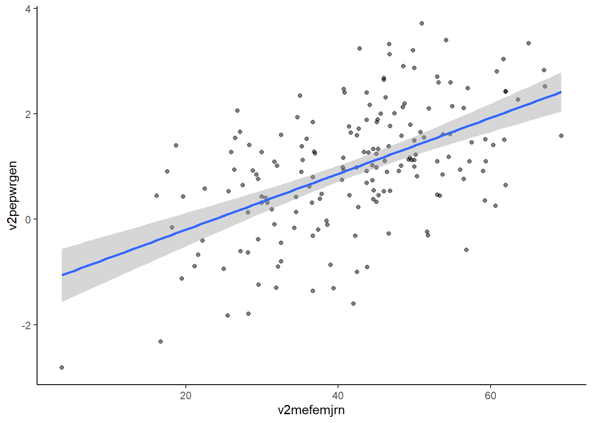
5.8 Credits
- This lesson uses data from
- Stephenson, Laura B., Allison Harell, and Daniel Rubenson. 2025 Canadian Election Study (CES).
- Varieties of Democracy (V-Dem) Project. V-Dem Dataset.